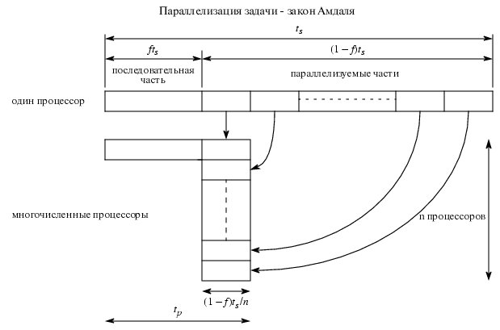

Максимальное ускорение (закон Амдаля)
Процессоры используют одну часть времени на непосредственно вычисления, а другую - на обмен сообщениями.
Закон Амдаля связывает ускорение с долей операций, выполняемых последовательно.
Обозначим через f ту часть алгоритма, которая не распараллеливается,
тогда та часть алгоритма, которую можно распределить по процессорам, будет равна
(1-f) (затраты на коммутацию не учитываются).
Пусть ts - время выполнения алгоритма на одном процессоре однопроцессорной
системы (последовательная машина), n - число процессоров.
Поясняющий рисунок:

При переносе расчетов на параллельную машину время расчета
распределится следующим образом:
время f ts займет та часть алгоритма, которую невозможно распараллелить,
время (1-f) ts / n будет затрачено на
распараллеливаемую часть алгоритма.
Истинное время tp, затраченное на работу на параллельной машине c n процессорами,
будет рассчитываться по формуле:
-
tp=f ts+(1-f) ts / n.
Определим фактор ускорения расчета S(n), достигаемый на параллельной машине c
n процессорами, как S(n)=ts / tр.
-
S(n)=ts / tр=
n / (f n+1-f)
или
-
S(n)=n / (1+(n-1)f)=n / (fn+1-f) ,
где f- доля операций, выполняемых последовательно.
Эта формула называется законом Амдаля (Gene Amdahl) об ограничении скорости параллельных вычислений.
Она была выведена в 1967 году и говорит о том, что даже если часть последовательных вычислений мала,
максимальный фактор ускорения для бесконечного числа процессоров не превосходит
1 / f.
Для существенного увеличения фактора ускорения S(n) необходимо минимизировать
долю операций f, выполняемых последовательно: f<<1. Однако даже в
этом случае величина fn может быть достаточно заметной при
большом числе используемых процессоров n.
При f<<1 закон Амдаля будет преобразован в виде:
-
S(n)=n / (1+f n) ,
Из приведенных графиков видно, что при большой доле последовательной части алгоритма f
(близкой к 1) увеличение числа процессоров не
приводит к существенному ускорению выполнения задачи.
При заданном значении f величина S(n) приближается к своему асимптотическому
значанию, приблизительно равному 1 /f , поэтому существует некоторое
критическое значение количества процессоров n, после которого наращивание числа
процессоров не приводит к увеличению фактора ускорения.


 [Назад]
[Оглавление]
[Вперед]
[Назад]
[Оглавление]
[Вперед]
Последнее обновление 27.12.2001 WebMaster